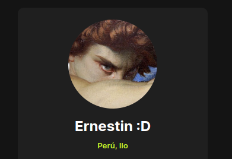

Proyectos
Algoritmo de Interrupcion de Procesos
Estructura de algoritmo realizado en lenguaje Python simulando una Interrupcion de procesos.
Ir


Hola! soy Ernesto Montero, un estudiante cursando la carrera de Ingenieria de Sistemas e Informatica en la Universidad Nacional de Moquegua, a lo largo de mi carrera he podido mejorar mis habilidades. Aprendiendo lenguajes como Python y Java o creación de aplicaciones de Web usando HTML y CSS, de la misma manera conocimiento en Base de Datos con SQL. Mi meta es ser un gran desarrollador Web :D.